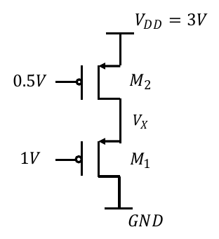

定性论述 · 第 2 章 · 自编补充论述
本题涉及的概念
二极管连接与串联MOS的状态自洽
二极管连接是将栅漏短接，不是另外接入一个结。对正阈值增强型，开启时 ，因此在长沟道模型中处于饱和；短沟道仍需另外检查速度饱和。
统一短沟道模型与最小电压判据
先确认 ，再取 ，统一手算为 。三个量分别对应夹断、漏压不足、速度限制。
定性论述题
说明二极管连接为何在长沟道导通时饱和，以及串联未知中间节点的一般求解步骤。为什么不能预先固定源电位、忽略体效应或无依据假设两管等强？
查看关联原题图表

参考答案与评分要点
考试作答
栅漏短接的增强型有 ，开启且 时满足 ，所以在长沟道模型中饱和。对串联，应以未知中间节点写各端实际电压，按 与 极性判断源端，并按源体偏置更新阈值；稳态中间无分支时，两管电流幅值相等。假设状态、列等流式、解节点后，必须逐管回代开启与区间条件并剔除非物理解。浮动源端不等于地，不同体偏也不一定有相同阈值。若强度比缺失，通常应给符号或条件解，不能悄悄令两管相同；回忆版串联题即属于此情况。
评分要点
- 二极管连接饱和证明
- 端口电压与体偏
- 稳态串联等流
- 解后回代剔根
- 缺强度比不补造
为什么这样回答
先写电压再判断状态，状态决定电流式，电流式解出的电压又必须满足原判断，这个闭环就是自洽。
出处与回查
PPT/chapter2-device01-MOS-DC chara_20260915.pdf· PDF 第 22、31、32、35 页考试相关/数字集成电路设计2025-2026-1期末考试回忆版.pdf· PDF 第 1 页
关联题目：